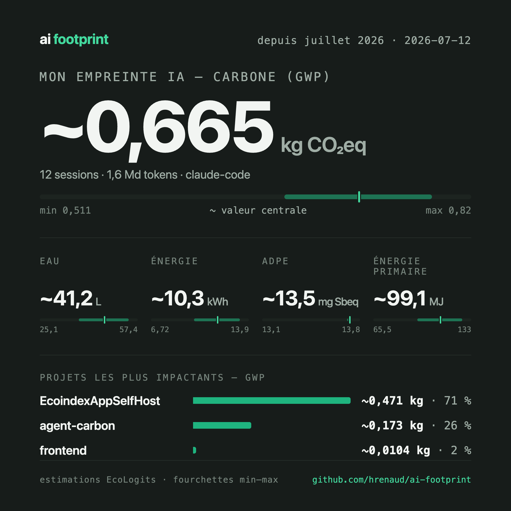

Compatible avec tes outils
-
 Claude Code
Claude Code
-
 OpenCode
OpenCode
-
 Pi
Pi
AI Footprint mesure 5 critères environnementaux de tes sessions d'IA — gaz à effet de serre, eau, énergie, épuisement des métaux rares — et les affiche sous forme de fourchettes honnêtes, jamais un chiffre unique trompeur.
Calculé avec EcoLogits — moteur open source reconnu, offline, aucun chiffre inventé
curl -fsSL https://raw.githubusercontent.com/hrenaud/ai-footprint/main/install.sh | bash
Installe en une seule commande — zéro configuration.
Utilise Claude Code, OpenCode ou Pi exactement comme d'habitude.
Lance un rapport détaillé (par projet et par modèle) avec la
commande /footprint-report ou une image partageable
avec /footprint-card.
Vois ton impact dans la statusline, en direct, session après session.

Gaz à effet de serre émis, en équivalent CO2.
Eau consommée pour refroidir les datacenters qui font tourner le modèle.
Épuisement des ressources minérales rares utilisées pour fabriquer le matériel.
Électricité consommée par les serveurs pour répondre à ta requête.
Énergie primaire nécessaire, en amont de la production d'électricité.
La région exacte du datacenter qui répond à ta requête est inconnue, et son efficacité énergétique (PUE) varie fortement. Tout outil qui affiche un chiffre précis unique masque cette incertitude — ou l'invente.
AI Footprint ne réinvente pas la modélisation : il délègue chaque calcul à EcoLogits, un moteur open source reconnu, déjà utilisé par d'autres projets de la communauté — vérifiable, pas une boîte noire propriétaire.